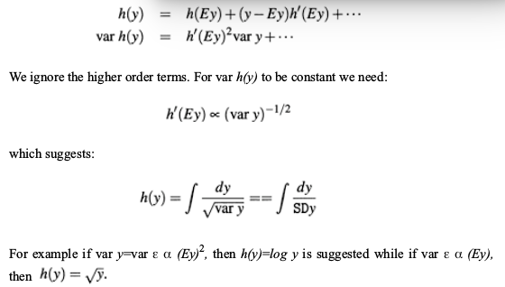
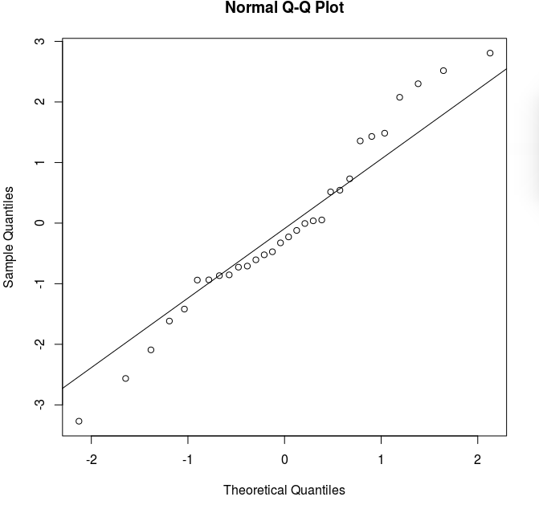
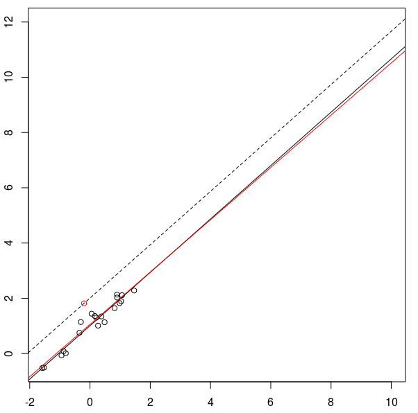
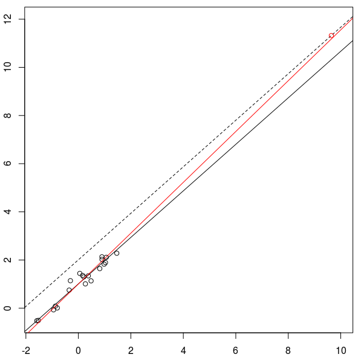

The theory of linear models, as we have seen it so far, relies on
various assumptions. Some of these assumptions may fail for a
real life data set. We need to diagnose such a failure, and if
possible, remedy it.
There are generally three types of departure:
errors are not IID Gaussian.
$E(y)\neq X \beta$ for any $\beta.$ For example,
if we are trying to fit a straight line where a quadratic curve
is needed.
The errors are not observed directly, but we generally use the
residuals as a proxy for the errors:
$$
\v e = \v y - \hv y = (I-P_X)\v y.
$$
The since $\hv y = P_X \v y,$ the $P_X$ matrix is
called the hat matrix (the matrix that puts a hat on $\v
y$). Its diagonal entries are often written as $h_i$'s.
The general idea is to plot the residuals against various
quantities. The plots should show no
change in the variability. Any other pattern (e.g., fanning out)
signals potential heteroscedasticity. However, even though the
true errors $\v \epsilon$, are assumed to be homoscedastic,
the residuals, $\v e$, are not. Clearly,
$$
V(\v e) = \sigma^2 (I-P_X).
$$
Here we have used the fact that $I-P_X$ is a symmetric and idempotent.
Thus, $V(e_i) = \sigma^2 (1-h_i).$ As $h_i$'s are
known numbers, we can make the $e_i$'s homoscedastic by
dividing with $\sqrt{(1-h_i)\h \sigma^2}$ to get the standardised
residuals:
$$
r_i = \frac{e_i}{\sqrt{(1-h_i) \h\sigma^2}}.
$$
There is some ambiguity of terminology here. What we have
called the standardised residual is called
studentised residual by some authors. Other authors reserve this
term "Studentised" for the case when $\h \sigma^2$ is computed based on
all cases except the $i$-th one.
It is a good idea to
plot these standardised residuals against the fitted values as
well as the covariates, if any. Let's look at an example borrowed
from our textbook.
EXAMPLE:
The data set we are going to use is already part
of faraway package. It is called:
library(faraway)
gala
You can find details about it using
?gala
Here is part of the documentation:
gala package:faraway R Documentation
Species diversity on the Galapagos Islands
Description:
There are 30 Galapagos islands and 7 variables in the data set. The
relationship between the number of plant species and several
geographic variables is of interest. The original data set
contained several missing values which have been filled for
convenience.
Let's fit a linear model. Our textbook ignores the second column
of the data set, and (not being sure about any scientific reason
behind it) we are doing the same here.
It shows a fanning out effect.
We should also plot the
standardised residuals against the covariates. It may be that some
covariate influences the precision of the measurement
(e.g. temperature may increase noise in certain physical
systems). In such a situation we may need to incorporate the
heteroscedasticity into our model. The most common way to do so
is via generalised least squares (GLS) that we shall
discuss later. A less ambitious
technique is to apply some variance stabilising transform
to remove the heteroscedasticity.
The following excerpt from our text book suggests how one arrives
at a variance stabilising transform by visual inspection of the
residual-vs-fitted plot pattern:

In our case the fanning out was more or less linear. So we try the square root transform:
A normal probability plot is a good diagnostic tool here.
It plots the sample quantiles (of the residuals) against the
theoretical quantiles (based on $N(0,1)$ distribution).
Ideally the plotted points should all lie along a line. R can
draw such a line for you:
qqnorm(s.e)
qqline(s.e)
The plot looks like:

shapiro.test(s.e)
Departure from normality may be dealt with in a number of ways:
If the distribution is unimodal, but skewed, then Box-Cox
transforms might help:
$$
f_\lambda(y)
= \left\{\begin{array}{ll}\frac{y^\lambda-1}{\lambda}&\text{if }\lambda\neq0\\\log y&\text{otherwise.}\end{array}\right.
$$
The function boxcox from the MASS
package computes the best possible value for $\lambda.$
If the distribution is nowhere near normal, then
bootstrapping is one way out. The version of bootstrap to be
used here is called residual bootstrap.
EXAMPLE:
Here we first extract the residuals, bootstrap them (i.e.,
resample them), and add the resampled residuals to the original
fitted values to create bootstrapped response values.
attach(gala)
y = sqrt(Species)
fit = lm(y ~ Area+Elevation+Nearest+Scruz+Adjacent)
e = fit$resid
for( i in 1:1000 ) {
estar = sample(e,rep=T)
ystar = fit$fitted + estar
fitstar = lm(ystar~Area+Elevation+Nearest+Scruz+Adjacent)
bootcoef = rbind(bootcoef,fitstar$coef)
}
Plotting $\h \epsilon_i$ against $\h \epsilon_{i-1}$
may unearth some pattern. You may also try the Durbin-Watson test.
library(lmtest)
dwtest(formula)
$$
DW = \frac{\sum_2^n (e_i-e_{i-1})^2}{\sum_1^n e_i^2}.
$$
The most common remedy to correlated errors is to allow
nondiagonal covariance matrix for $\epsilon.$ This may be
tackled by IRLS or MLE. The latter is implemented
in gls of the nlme package.
Outliers are points that do not conform to the general pattern of
the bulk of the data. A simple way to detect an outlier is by
looking at points with high residuals. However, some outliers
influence the fitted model so strongly that the points do not
have high residuals. It is somewhat like a corrupt powerful politician
bending the legal machinery to escape detection. The influence of a
point on the fit (with the remaining points fixed) is called the
leverage of that point. To understand this run the following R
code:
x = rnorm(20)
y = x + 1 + rnorm(20)/5
f = function() {
plot(x,y,xlim=range(c(x,10)),ylim=range(c(y,12)))
fit=lm(y~x)
abline(fit$coef)
abline(a = fit$coef[1]+1, b=fit$coef[2],lty=2)
np = locator(1)
X = np$x
Y = (fit$coef[1]+1) + fit$coeff[2]* X
newX = c(x,X)
newY = c(y,Y)
newFit = lm(newY~newX)
points(X,Y,col='red')
abline(newFit$coef,col='red')
}
f()
It draws a scatterplot of 20 points, and fits a line to it. Then
it will wait for you to add an outlier at a vertical distance of
1 above the fitted line. Click on the plot window to add an
outlier (R will only take the $x$-value of the click and
compute $y$-value so that the new point lies on the dashed
line which runs parallel to the fitted line at a vertical distance 1).
The new fit is computed and shown in red. Depending on the
position of the new point the new residual may be large or
small. The smaller the residual the more the leverage of the
outlier.
Here are two examples. First a low leverage case:

Next, a high leverage case:

Note that in either case the new point is an equally far away
from the overall pattern. But in the first case you can detect
this departure by looking at the residuals, while in the second
case you cannot.
So we need a better way than to just look at the residuals. One
such technique is called the leave-one-out studentised residuals. In
principle, it computes the studentised residual for each point by fitting the
model to only the remaining points. It might sound
computationally intensive, but actually there is a shortcut
method to do this:
$$
t_i = r_i\sqrt{\frac{n-p-1}{n-p-r_i^2}}.
$$
Under Gaussianity assumption, this has $t_{(n-p-1)}$
distribution.
We need to perform Bonferroni correction in order to avoid false
outlier detection.